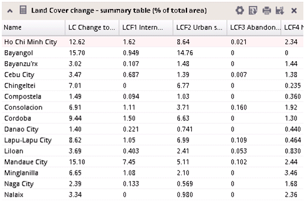

Tables are intended for displaying and comparing accurate values of indicators.

Tables serve also for sorting of indicator values. It is possible to sort the table by sorting values in any column in ascending or descending mode. Sorting is activated by single click on the column header.
Actual sorting of the table is immediately projected also in column charts, where corresponding attributes are sorted in the same way.